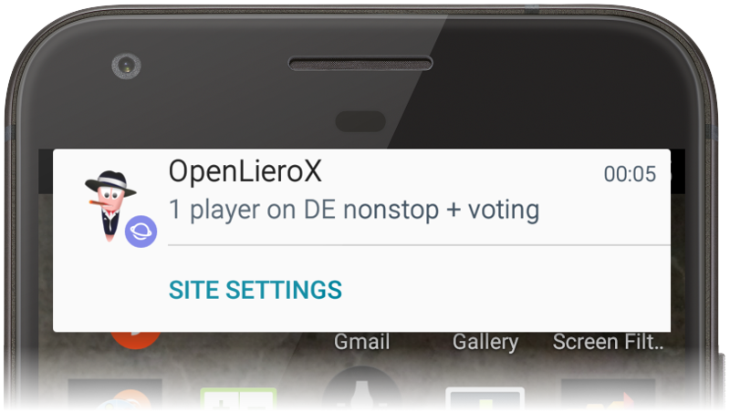

OpenLieroX server notifier

Example of the notification. Open this page using your phone for best results.
Minimum amount of players
1 player on the server
2 players on the server
3 players on the server
4 players on the server
How often to notify
Notify once per hour
Notify once per 3 hours
Notify once per 6 hours
Notify once per day
Notify once per 3 days
Servers to monitor